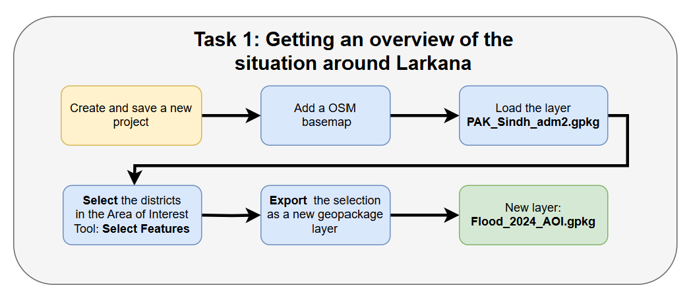
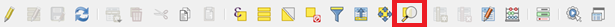
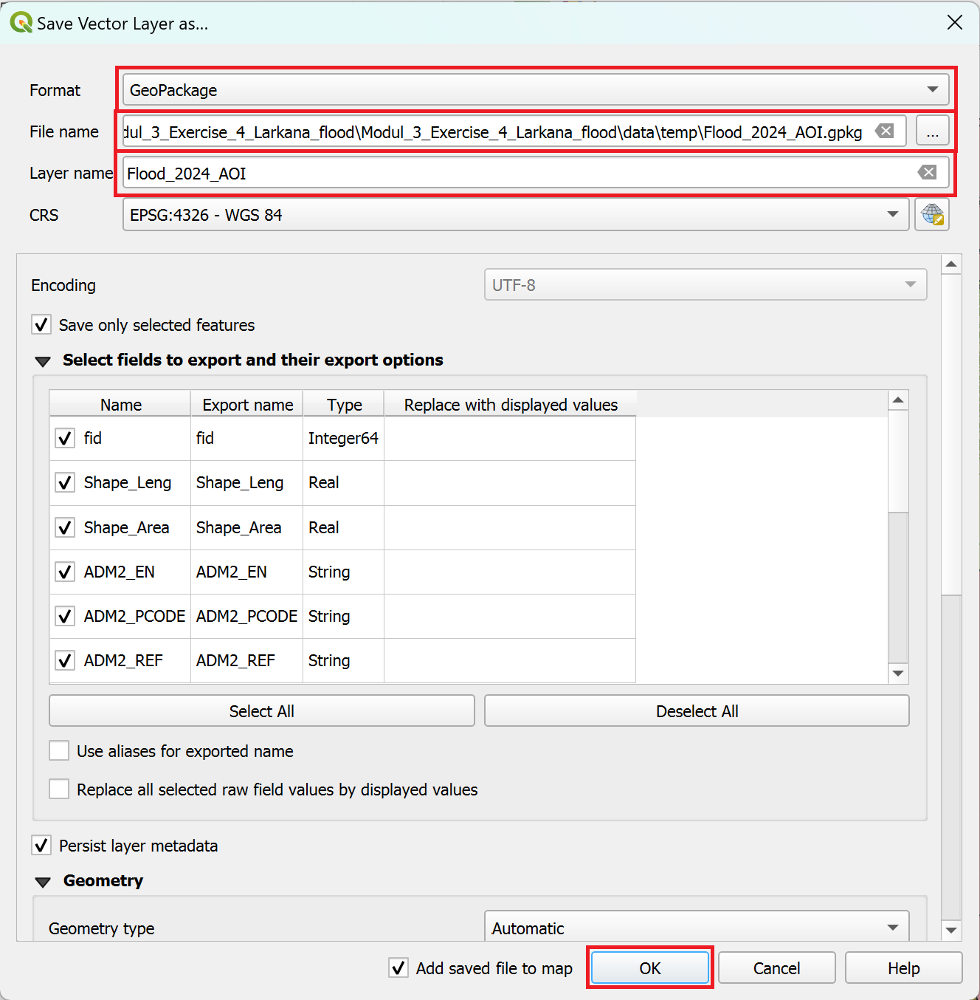
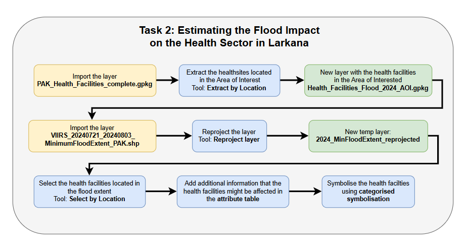
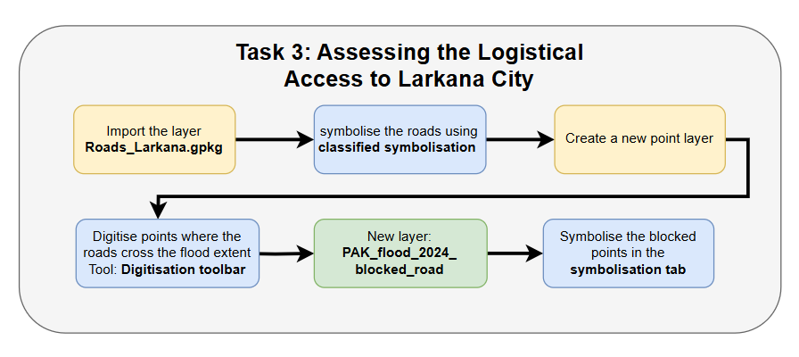

Ejercicio 5: Respuesta a las inundaciones en Larkana#
Programa de ejercicios de respuesta a las inundaciones en Larkana:
Este es el tercer ejercicio en el Programa de ejercicios de respuesta a las inundaciones en Larkana:.
Competencias abordadas en este ejercicio
Seleccionar entidad y exportar a un archivo nuevo
Extraer por ubicación
Reproyectar capa
Editar la tabla de atributos
Clasificación
Digitalización de una capa de puntos
Duración estimada del ejercicio
El ejercicio dura alrededor de 3 horas, dependiendo de la cantidad de participantes y su familiaridad con los sistemas informáticos.
Artículos relevantes en Wiki y los capítulos del módulo
Instrucciones para capacitadores#
Rincón del instructor
Preparar la capacitación
Tómese el tiempo necesario para familiarizarse con el ejercicio y el material proporcionado.
Prepare un pizarrón. Puede ser una pizarra física, un rotafolio o una pizarra digital (p. ej., una pizarra en Miro) en la que los participantes puedan agregar sus resultados y preguntas.
Antes de comenzar el ejercicio, asegúrese de que todos hayan instalado QGIS y hayan descargado y descomprimido la carpeta de datos.
Consulte ¿Cómo hacer capacitaciones? para obtener consejos generales sobre cómo impartirlas.
Impartir la capacitación
Introducción:
Presente la idea y el objetivo del ejercicio.
Proporcione el enlace de descarga y asegúrese de que todos hayan descomprimido la carpeta antes de comenzar las tareas.
Guía paso a paso:
Muestre y explique cada paso al menos dos veces y de manera pausada para que todos puedan ver lo que está haciendo y aplicarlo en su propio proyecto de QGIS.
Pregunte con regularidad si alguien necesita ayuda o si todos están siguiendo el ejercicio, para asegurarse de que todos comprenden y realizan los pasos por sí mismos.
Mantenga una actitud abierta y paciente ante cualquier pregunta o problema que pueda surgir. Los participantes están haciendo varias tareas a la vez: prestan atención a sus instrucciones y las aplican en su propio proyecto de QGIS.
Cierre de la sesión:
Dedique tiempo al final del ejercicio a cualquier problema o pregunta relacionada con las tareas que pueda surgir.
Reserve tiempo para preguntas abiertas.
Datos disponibles#
Descargue todos los conjuntos de datos aquí, guarde la carpeta en su computadora y descomprima el archivo.
Conjunto de datos |
Título original |
Publicado por |
Descargado de |
|---|---|---|---|
PAK_Sindh_adm1.gpkg |
Oficina de la ONU para la Coordinación de Asuntos Humanitarios |
HDX |
|
PAK_Sindh_adm2.gpkg |
Oficina de la ONU para la Coordinación de Asuntos Humanitarios |
HDX |
|
PAK_Sind_Health_Facilities.gpkg |
Equipo humanitario de OpenStreetMap (HOT) |
HDX |
|
VIIRS_20240721_20240803_MinimumFloodExtent_PAK.shp |
El satélite detectó extensiones de agua del 8 al 12 de agosto de 2024 sobre Pakistán) |
UNO SAT |
HDX |
Roads_Larkana.gpkg |
Equipo humanitario de OpenStreetMap |
Herramienta de exportación HOT (exportación creada en septiembre de 2024) |
Hint
Aquí se puede descargar la capa de extensión de la inundación reproyectada y fija
Hint
Estructura de las carpetas Para mantener sus datos organizados y de fácil acceso, es importante establecer una estructura de carpetas clara en su computadora para sus proyectos de QGIS y sus datos geoespaciales. Asegúrese de que los datos de su ejercicio se guardan en un lugar que permita una fácil recuperación y asociación con el proyecto QGIS correspondiente.
Tarea 1: Obtener una visión general de la situación en los alrededores de Larkana#
Contexto
Usted ha sido asignado como gestor de información en las regiones de Pakistán afectadas por las inundaciones. A su llegada recibió informes del equipo de operaciones que indican que la ciudad de Larkana y sus alrededores han sido gravemente afectadas por las inundaciones. El equipo necesita una visión general de la ubicación de la ciudad.
{kind=link}

Abra QGIS y cree un nuevo proyecto haciendo clic en
Project->NewUna vez creado el proyecto guarde el proyecto en la carpeta del ejercicio “Modul3_Exercise_2_Flood_Larkana”. Para hacer esto, haga clic en
Project->Save asy navegue hasta la carpeta. Nombre el proyecto “PAK_Larkana_flood_2024”.Primero, queremos agregar el OpenStreetMap como mapa base para la orientación. Para añadir el OSM como mapa base, haga clic en
Layer->Add Layer->Add XYZ Layer…. ElijaOpenStreetMapy haga clic enAdd.A continuación, cargue el GeoPackage “PAK_Sindh_adm2.gpkg” en su proyecto. Para hacerlo, debe arrastrar y soltar (video en Wiki). O haga clic en
Layer->Add Layer->Add Vector Layer. Haga clic en los tres puntos de tres puntos y navegue hasta “PAK_Sindh_adm2.gpkg”. Seleccione el archivo y hacer clic en
de tres puntos y navegue hasta “PAK_Sindh_adm2.gpkg”. Seleccione el archivo y hacer clic en Open. De vuelta en QGIS, haga clic enAdd(Wiki Video).
Attention
Los archivos GeoPackage pueden contener varios archivos e incluso proyectos QGIS completos. Cuando cargue un archivo de este tipo en QGIS aparecerá una ventana en la que deberá seleccionar los archivos que desea cargar en su proyecto de QGIS.
Para obtener una visión general de la situación, debemos exportar los límites administrativos para nuestra Área de Interés (AOI). Para hacerlo, debemos exportar el distrito de Larkana, así como los distritos vecinos, desde la capa
PAK_adm2_Sindh.Haga clic derecho en la capa
PAK_adm2_Sindhy seleccionar Abrir tabla de atributos.Busque la columna
ADM2_ENy la fila para el distrito de Larkana.Haga clic en los números a la izquierda de la ventana de la tabla de atributos para seleccionar la entidad Larkana. La fila aparecerá de azul y el área de Larkana se volverá amarilla en el lienzo del mapa.
Haga clic en
Zoom Map to selected rowsen la barra superior de la ventana de la tabla de atributos.
Cierre la tabla de atributos.
En la barra de herramientas en la parte superior de la ventana de QGIS, seleccione la herramienta
Select Feature(s) . Mantenga presionado Ctrl y haga clic en los distritos que rodean el distrito de Larkana (video en Wiki). Los seis distritos seleccionados se verán de color amarillo en el lienzo del mapa.
. Mantenga presionado Ctrl y haga clic en los distritos que rodean el distrito de Larkana (video en Wiki). Los seis distritos seleccionados se verán de color amarillo en el lienzo del mapa.
Desactive la herramienta
Select Feature(s). Para hacerlo, haga clic en el icono en la barra de herramientas en la parte superior de la ventana de QGIS.
en la barra de herramientas en la parte superior de la ventana de QGIS.Ahora podemos exportar las entidad geográfica seleccionadas y guardarlas en un nuevo archivo. Haga clic derecho en la capa de
PAK_adm2_Sindhy seleccioneExport>Save Selected Features as.Se abrirá una nueva ventana. Aquí, puede seleccionar cómo y dónde se guardan las entidades seleccionadas.

Asegúrese de guardar el GeoPackage en la ubicación correcta haciendo clic en los tres puntos a la derecha del campo
File name.#En
Format, seleccionar GeoPackage.A la derecha del campo de
File name, haga clic en los tres puntos. Vaya a la carpeta con los datos del ejercicio y guárdelos en la carpetadata/temp/.Introduzca un nombre de capa. Por ejemplo, “Flood_2024_AOI”.
Haga clic en
Ok. La capa exportada debe aparecer en el panel Capas.
{kind=link}
Tarea 2: Estimación del impacto de las inundaciones en el sector de la salud en Larkana#
Contexto
Las publicaciones en redes sociales han señalado un impacto significativo en el sistema sanitario de la región. Se le ha encomendado recabar toda la información posible sobre la situación y, si fuera factible, estimar el impacto sobre el sistema de salud.
{kind=link}

En primer lugar, debemos averiguar dónde se encuentran los centros de salud en la zona. Podemos encontrar conjuntos de datos mediante una búsqueda rápida en el Intercambio de Datos Humanitarios (HDX). Allí puede encontrarse el conjunto de datos denominado “Centros de salud de Pakistán (exportado de OpenStreetMap)”. Usaremos este conjunto de datos. El conjunto de datos ya está disponible en la carpeta de descargas para este ejercicio.
Importe el GeoPackage
PAK_Health_Facilities_complete.gpgken su proyecto. Puede arrastrarlo al lienzo del mapa o abrir la ventana de importación haciendo clic enLayer>Add Layer>Add Vector Layeren la barra superior de QGIS (consulte la página Wiki). Aparecerá una nueva capa con datos de punto en el lienzo del mapa.Una vez que hayamos importado los centros de salud, podremos extraer aquellos que se encuentren dentro de nuestra área de interés. Podemos lograrlo con la herramienta
Extract by Location.En la caja de herramientas de Procesos (abriendo la caja), busque la herramienta “Extraer por ubicación”. Haga doble clic en ella. Se abrirá una nueva ventana.

Extraer las instalaciones sanitarias de nuestra área de interés mediante la herramienta “Extraer por ubicación”.#
Como
Input Layer, seleccione la capaPAK_Health_Facilities_complete.El
Geometric predicatedebe establecerse enIntersectEn
By comparing to the features from, seleccione la capa de área de interés “Flood_2024_AOI”.En
Extracted (location), haga clic en los tres puntos y seleccioneSave to Geopackage.Vaya a la carpeta
/Module_3_Exercise_5_Larkana_Flood/data/temp/.Asigne al archivo el nombre “Health_Facilities_Flood_2024_AOI” y haga clic en
Save.Se le pedirá que introduzca un nombre de capa. Use el mismo nombre que el archivo y haga clic en
Ok.Haga clic en
Run. La nueva capa aparecerá en la pestaña Capas.
Ahora tenemos una visión general de la ubicación de los centros de salud. Sin embargo, queremos saber qué centros de salud se ven afectados por la inundación. Afortunadamente, la ONU acaba de compartir un conjunto de datos sobre el alcance de las inundaciones del 8 al 12 de agosto, que podemos superponer con nuestra capa con los sitios de salud para identificar los sitios de salud que están en la zona inundada.
Importe el conjunto de datos “VIIRS_20240721_20240803_MinimumFloodExtent_PAK.shp” en su proyecto QGIS.
Una vez cargadas las capas en QGIS, podrá comprobar si se muestran correctamente. Sin embargo, al comprobar la información de las capas, puede ver que las nuevas capas tienen un Sistema de Referencia de Coordenadas (SRC) diferente. Tienen el código EPSG 9707, mientras que nuestro proyecto tiene el 4326 (video en Wiki).
Haga clic derecho en la capa y seleccione
Properties. Se abrirá la ventana de propiedades.
En la barra de pestañas vertical de la izquierda, vaya hasta
Information. Aquí encontrará información adicional sobre el conjunto de datos seleccionado.
Bajo el título “Sistema de referencia de coordenadas (SRC)”, encontrará toda la información sobre el SRC. Los más importantes son:
Nombre: aquí encontrará el código EPSG.
Unidades: aquí encontrará información sobre las unidades de medida utilizadas en el conjunto de datos. Por ejemplo, metros o grados.
Esto se convertirá en un problema tan pronto como hagamos algo diferente de solo mostrar las capas. Ya que queremos manipular las capas en el siguiente paso, primero necesitamos reproyectarlas (video en Wiki).
En la parte superior de la ventana de QGIS, haga clic en la pestaña
Vector>Data Management Tools->Reproject Layero busque la herramienta en laProcessing Toolbox.Como
Input layer, seleccione “VIIRS_20240721_20240803_MinimumFloodExtent_PAK.shp”Como destino, seleccione el código SRC/EPSG 4326.
Guarde el nuevo archivo en su carpeta de
temphaciendo clic en los tres de puntos junto a Reprojected, especifique el nombre del archivo como “2024_MinFloodExtend_reprojected”.Haga clic en
Run.Elimine la capa antigua del panel de capas haciendo clic derecho sobre la capa ->
Remove layer.Ajuste la opacidad de la capa de inundación haciendo clic derecho sobre la capa “2024_MinFloodExtend_reprojected” en el Panel de capas y seleccionando
Properties. La ventana de propiedades se abrirá con una sección de pestaña vertical a la izquierda.
Vaya a la pestaña
Symbology.Mueva el control deslizante y ajuste la opacidad a alrededor del 60 %.
Hemos observado que ciertas centros de salud han sido afectados por las inundaciones. Para visualizar esta información en el mapa, planeamos incluir un nuevo atributo llamado “Flood_affected” en la tabla de atributos de “Health_Facilities_Flood_2024_AOI”. Para lograr esto, seleccionaremos todas los centros de salud que se encuentran dentro de la extensión de la inundación utilizando la herramienta “Seleccionar por ubicación”. En un siguiente paso, agregaremos una nueva columna a la tabla de atributos y agregaremos información a nuestros centros de salud seleccionados.
Abra el
Processing Toolbox(video en Wiki) y busque la herramienta “Seleccionar por ubicación”.Select features from= “Health_Facilities_Flood_2024_AOI”.Como
Geometric predicateutilizamosintersect.Para
By comparing to the features from, usamos la capa “2024_MinFloodExtent_reprojected”.Modify current selection by=creating new selection.Haga clic en
Run.

Selección de los centros de salud afectados por las inundaciones mediante la herramienta “Seleccionar por ubicación”#
Mensaje de posible error
En caso de que encuentre el error:
Feature (1) from “2024_MinFloodExtend_reprojected” has invalid geometry.
Please fix the geometry or change the Processing setting to the “Ignore
invalid input features” option.
Execution failed after 0.07 seconds
Primero debe usar la herramienta “Corregir geometría” antes de repetir el paso 5 fallido anteriormente de usar la herramienta “Seleccionar por ubicación”.
Para ello, abra el
Processing Toolboxy busque la herramienta “Arreglar geometrías”.Input layer=2024_MinFloodExtend_reprojectedGuarde el nuevo archivo en su carpeta de
temphaciendo clic en el de tres puntos, especifique el nombre del archivo como “2024_MinFloodExtend_reprojected_fix”.Haga clic en
Run.

El mensaje de error indica geometrías no válidas.#
Podemos editar la tabla de atributos para las entidades que hemos seleccionado:
Abra la tabla de atributos de “Health_Facilities_Flood_2024_AOI” haciendo clic derecho sobre la capa ->
Open Attribute Table(video en Wiki)Active el modo de edición haciendo clic en
 (video en Wiki). Ahora puede editar los datos directamente en la tabla.
(video en Wiki). Ahora puede editar los datos directamente en la tabla.Queremos agregar una nueva columna con el nombre “Flood_affected” para identificar qué centros de salud se encuentran dentro de la extensión de la inundación. Haga clic en
 . Se abrirá una nueva ventana.
. Se abrirá una nueva ventana.En la ventana de
Add field, agregue el nombre de la columna y especifique elTypeaText (string)(video en Wiki).Haga clic en
Ok.

Agregar una nueva columna a la tabla de atributos para la capa de centros de salud#
A continuación, queremos editar las filas de la tabla de atributos para las entidades que hemos seleccionado.
Busque la opción
Show all Featuresen la esquina inferior izquierda y haga clic en ella.Seleccione la opción
Show selected features(video en Wiki). Esto filtrará la tabla para mostrar solo las filas que representan los centros de salud directamente afectados por la inundación.Escriba
Yesen la columna “Flood_affected” en cada fila seleccionada.Cuando haya terminado, haga clic en
 para guardar sus ediciones y desactive el modo de edición haciendo clic de nuevo en (Wiki Video).
para guardar sus ediciones y desactive el modo de edición haciendo clic de nuevo en (Wiki Video).Haga clic en el icono
 en la barra de herramientas para finalizar la selección de entidades.
en la barra de herramientas para finalizar la selección de entidades.
Podemos mostrar el conjunto de datos enriquecido y visualizarlo mediante el método de simbolización de clasificación por categorías. Esto significa que seleccionamos una columna de la tabla de atributos y usamos los valores o el contenido como categorías para ordenar y mostrar los datos (video en Wiki):
En el panel de capas, haga clic derecho en la capa “Health_Facilities_Flood_2024_AOI” y seleccione
Properties. Se abrirá una nueva ventana con una sección de pestañas verticales a la izquierda.Vaya a la pestaña
Symbology.En la parte superior de la ventana, encontrará un menú desplegable. Ábralo y elija
Categorized.En
Value, seleccione la columna que añadimos, “Flood_affected”.Más abajo en la ventana, haga clic en
Classify. Deben aparecer los valores únicos de la columna “Flood_affected”.Puede hacer doble clic en cada color de la tabla para ajustar la simbolización y el color de cada valor.
Una vez que haya terminado de ajustar los colores, haga clic en
Applyy, a continuación, enOkpara cerrar la ventana de simbolización.

Clasificación de los centros de salud afectados por las inundaciones.#
Logro:
Hemos localizado los centros de salud específicos que han sido afectados por las inundaciones. Nuestras conclusiones indican que un total de cuatro instalaciones han quedado completamente inundadas y actualmente no están operativas. Considerando que evaluamos el impacto mínimo de las inundaciones, es muy probable que más centros de salud también se vean afectados. Estos datos son fundamentales para nuestro equipo operativo, ya que les permitirán elaborar estrategias y ejecutar una respuesta eficaz.
Tarea 3: Acceso logístico a la ciudad de Larkana#
Contexto
El equipo de operaciones está haciendo planes para entregar suministros muy necesarios a la región afectada alrededor de Larkana. Actualmente, hay incertidumbre sobre cómo se pueden transportar los suministros allí. El equipo de operaciones ha pedido más información sobre este tema.
Necesitan respuestas a las tres preguntas siguientes:
¿Cuáles de las carreteras que conducen a Larkana están bloqueadas y en qué lugares específicos están bloqueadas?
¿Hay algún puente que se pueda cruzar desde el lado oriental del Indo hasta el lado occidental, y dónde se encuentran estos puentes?
Si no es posible transportar suministros por carretera a la región, ¿qué método alternativo podría utilizarse para entregarlos?
Para tener una imagen más clara, necesitamos importar los datos de la red vial de la región a QGIS. Busque el archivo en la carpeta de entrada. La red vial se muestra inicialmente sin ningún tipo de carretera ni otros detalles relevantes. Debemos aplicar una técnica de clasificación categorizada solo para mostrar las carreteras específicas que nos interesan.
{kind=link}

Cargue el conjunto de datos “Roads_Larkana.gpkg” desde la carpeta de entrada en su proyecto QGIS.
Configuremos la clasificación por categorías. En los datos de OpenStreetMap se distingue entre diferentes tipos de carreteras utilizando la columna “autopista”.
Haga clic derecho en la capa “Roads_Larkana” y seleccione
Properties. Se abrirá la ventana de propiedades.Vaya a la pestaña
Symbology.En la parte superior, seleccione
Categorized(video en Wiki).En
Value, seleccione “autopista”.Haga clic en
Classify. Debería ver todos los valores únicos de la columna “autopista”.Quite las marcas de verificación de todas las categorías excepto de
motorway,primary,secondaryytrunk.Para ajustar los colores, puede hacer doble clic en las categorías.

Ventana de simbolización para la capa Roads_Larkana.gpkg.#
Tiene la opción de personalizar el ancho de las líneas de las carreteras principales para mejorar la visualización. Abra la ventana de simbología y seleccione
Symbol. En la nueva ventana, se puede ajustar el ancho de las líneas según su preferencia.

Ajuste de la simbolización de los diferentes tipos de carreteras#
Una vez que haya terminado, haga clic en
ApplyyOKpara cerrar la ventana de simbología.
Por último, queremos visualizar las carreteras que están inundadas. Para simplificar el proceso, buscaremos manualmente las carreteras que se intersecan con la capa de extensión de inundación y las marcaremos con puntos. Para ello, crearemos un nuevo conjunto de datos de puntos que representen las carreteras bloqueadas.
Haga clic en
Layer–>Create Layer->New GeoPackage Layer(video en Wiki)
En
Database, haga clic en y vaya a la carpeta temp. Asigne al nuevo conjunto de datos el nombre “PAK_flood_2024_blocked_road”. Haga clic enSave.Geometry type: SeleccionePointEn
Additional dimensiondebe asegurarse siempre de queNoneestá marcada.Seleccione el sistema de referencia de coordenadas (SRC) “EPSG:4326-WGS 84”. Por defecto, QGIS selecciona el SRC del proyecto.
En
New Fieldpuede añadir columnas a la nueva capa. Agregue la columna “Blocked_road”.Name= “Blocked_road”Type: SeleccioneText(string)Haga clic en
Add to Fields List para añadir la nueva columna a Fields List.Cree otro campo con el
name“Blocked_bridge” y elType: SeleccioneText(string).Haga clic en
OK.
Su nueva capa aparecerá en el panel de capas.

Creación de una nueva capa de puntos. Asegúrese de especificar una ubicación utilizando los tres puntos en la parte superior.#
Ahora puede crear un punto para cada lugar donde la capa de inundación cubre las carreteras principales que conducen a Larkana (Wiki).
Actualmente la nueva capa “PAK_flood_2024_blocked_road” está vacía. Para agregar entidades, podemos usar
Digitizing Toolbar. .
.Active el modo de edición haciendo clic en
. A continuación, active la opción de agregar nuevos puntos haciendo clic en 
Add Point Feature.Esté atento a los lugares donde la capa de inundación cubre las carreteras principales o puentes que salen de Larkana. Una vez que haya encontrado uno, haga clic con el botón izquierdo en la ubicación que desea digitalizar.
Una vez que haga clic en un lugar, aparecerá una ventana. Escriba
Yesen elBlocked_roadde campo para indicar que la carretera está bloqueada.Repita este paso con todas las ubicaciones que encuentre.

Esta ventana emergente se abrirá una vez que haya seleccionado una ubicación para agregar un punto. Asegúrese de introducir la información pertinente en las columnas.#
Una vez que haya terminado la digitalización, haga clic en
para guardar los cambios.Haga clic de nuevo en
para cerrar el modo de edición.
Ahora, ya hemos mapeado todas las carreteras principales bloqueadas de acceso a Larkana. Podemos usar iconos en lugar de solo puntos para mostrar la capa “PAK_flood_2024_blocked_road” y visualizar mejor este hecho (Wiki).
Haga clic derecho en la capa “PAK_flood_2024_blocked_road” en el panel de Capas y haga clic en
Properties. Se abrirá una nueva ventana con una sección de pestañas verticales a la izquierda. Vaya a la pestañaSymbology.Mantenga la opción
Single Symbol. Seleccione cualquier símbolo de la lista, que sea adecuado para marcar carreteras bloqueadas.Una vez que haya terminado, haga clic en
ApplyyOKpara cerrar la ventana de simbología.Después de que haya terminado, haga clic en el icono
para cerrar el modo de selección de entidades.

Ajuste de la simbolización para la nueva capa de puntos. Asegúrese de elegir un marcador que pueda identificarse fácilmente.#
Parte de su tarea era señalar posibles alternativas al transporte por carretera. ¿Puede identificar alguno?
Respuesta
En el suroeste de la ciudad de Larkana, se encuentra el Aeropuerto de Mohenjodaro. Actualmente, la carretera que va de la ciudad de Larkana al aeropuerto parece estar abierta y accesible. Esto significa que los suministros esenciales podrían transportarse desde el aeropuerto a la ciudad sin encontrar ningún bloqueo en la carretera.

Acceso por carretera al aeropuerto de Mohenjodaro#
El equipo de operaciones tiene ahora toda la información que necesita para planificar su logística. Buen trabajo.
Continúe con el programa de ejercicios
Este ejercicio forma parte del Programa de ejercicios de respuesta a las inundaciones en Larkana y continúa con un ejercicio en el módulo 4.
Haga clic aquí si desea continuar con el siguiente ejercicio de este programa.